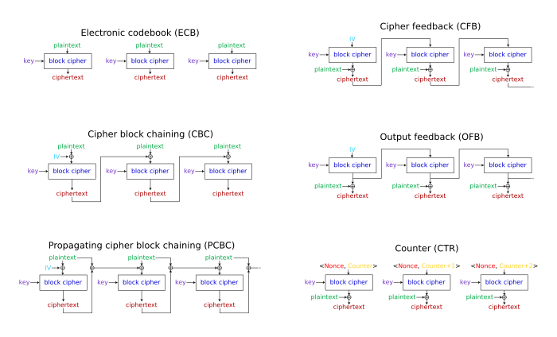
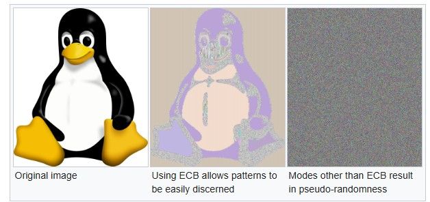

Section II: Cryptographic Primitives · Lesson 03-CP
Symmetric Encryption
The Shared Key
- Imagine two field agents need to communicate. They share one identical key that locks and unlocks the same safe.
- They exchange messages by visiting the safe and depositing and retrieving notes.
- This is the essence of symmetric cryptography: one shared secret for both encryption and decryption.
- Contrast with hashing: Hashes are one-way commitments; symmetric ciphers are reversible with the key.
Exclusive OR (XOR) Logic
- Definition: XOR outputs
1if exactly one of its inputs is1; otherwise0.- Denoted by symbols:
⊕,^, or sometimesXOR.
- Common in cryptography, checksums, and parity bits.
- Denoted by symbols:
Truth Table:
| A | B | A ⊕ B |
|---|---|---|
| 0 | 0 | 0 |
| 0 | 1 | 1 |
| 1 | 0 | 1 |
| 1 | 1 | 0 |
Properties:
- Commutative:
A ⊕ B = B ⊕ A
- Associative:
(A ⊕ B) ⊕ C = A ⊕ (B ⊕ C)
- Identity:
A ⊕ 0 = A
- Self-inverse:
A ⊕ A = 0
Visualization: Think of a “difference detector” — it lights up when inputs differ.
Infinite-length One Time Pad
Imagine you and a friend share a secret, infinite-length pad of random text
Could establish perfect secrecy if you never reused the same offset into pad
- Encrypt: msg pad-at-offset ciphertext
- Decrypt: ciphertext pad-at-offset plaintext
- Share: (ciphertext, offset)
Test XOR with a OTP here: XOR Pad Demo
Pseudo-Random Generators
- Infinite-length, pre-shared keys do not exist, but let’s assume PRGs do
- A psuedo-random number generator generates a stream of text
- You preshare a random seed for the generator, and then follow same algorithm in previous slide
- Essentially a very primitive stream cipher
- Weakness:
- No error correction
- Must track offset
Simple Pseudorandom Generator
Let be a cryptographic hash function
Let the initial seed be
For each round :
- Compute
- Output the last byte of :
- Use the remaining bits of as the next seed:
- Compute
Final output:
Visualize this: PRG Demo
Interpretation: Each iteration hashes the current seed, emits one byte as pseudorandom output, and reuses the rest as the next seed. However, this structure is not provably secure.
Counter-Mode Pseudorandom Generator (PRG)
- Let be a pseudorandom function (PRF) keyed by a secret key (e.g., ).
- Let the seed be the secret key and initialize a counter .
- For each round :
- Compute a block with the PRF:
- Output (e.g., the last byte):
- Increment the counter:
- Compute a block with the PRF:
- Final output:
Interpretation: Use a secret key and a public counter to “seek” through a PRF. Each is pseudorandom; selecting a byte (or more) per round yields a secure keystream.
What Is Symmetric Cryptography?
- Definition: Encryption and decryption using the same secret key.
- Mathematical form:
- Encryption Eₖ(plaintext) = ciphertext
- Decryption Dₖ(ciphertext) = plaintext
- Where Dₖ(Eₖ(m)) = m
- Encryption Eₖ(plaintext) = ciphertext
- Examples: AES, ChaCha20, DES (legacy).
- Fast and efficient—used for bulk data, VPNs, and storage encryption.
Shannon’s Principles: Confusion and Diffusion
| Principle | Purpose | Example |
|---|---|---|
| Confusion | Obscure the relationship between key and ciphertext. | Substitution tables (S-boxes) |
| Diffusion | Spread the influence of each plaintext bit across many ciphertext bits. | Permutation layers (P-boxes) |
- Introduced by Claude Shannon (1949).
- Together, they create complex, unpredictable ciphertext from simple transformations.
Building Blocks of Block Ciphers
- Block ciphers process fixed-size chunks (e.g., 128 bits).
- Built from repeated rounds combining:
- Substitution (S-box): non-linear mapping for confusion.
- Permutation (P-box): bit re-ordering for diffusion.
- Key mixing: XOR with a round key derived from the main key.
- Substitution (S-box): non-linear mapping for confusion.
- Multiple rounds amplify security—small changes in plaintext or key cause large changes in ciphertext.
Block vs Stream Ciphers
| Feature | Block Cipher | Stream Cipher |
|---|---|---|
| Unit of operation | Fixed-size blocks (e.g., 128 bits) | Single bits or bytes |
| Key use | Same key for many rounds | Key generates continuous keystream |
| Examples | AES, DES | ChaCha20, RC4 |
| Strength | Strong diffusion and structure | High speed and low latency |
| Typical use | Disk, file encryption | Real-time communication, VPNs |
Modes of Operation Visual

Photo Credit: A.M. Rowsell and Epachamo, CC-BY-SA 4.0. Wikipedia

Modes of Operation Overview
| Mode | Description | Strengths | Weaknesses |
|---|---|---|---|
| GCM | CTR-style encryption plus authentication tag. | Best practice AEAD; parallelizable. | Requires unique nonce. |
| CBC | Chains each block to the previous via XOR with IV. | Hides patterns, strong diffusion. | Sequential; needs unpredictable IV and authentication. |
| CTR | Encrypts counter values to generate keystream. | Parallelizable, random access. | Requires unique nonce and authentication. |
| ECB | Encrypts each block independently. | Simple, parallelizable. | Reveals patterns (insecure). |
| CFB | Turns block cipher into self-synchronizing stream. | Handles short data streams. | Legacy mode; bit errors propagate. |
ECB Mode Pitfall
- Electronic Codebook (ECB) encrypts each block independently.
- Identical plaintext blocks → identical ciphertext blocks.
- Leaks patterns in structured data (images, database fields).
- Never use ECB for real-world encryption.

Photo Credit: Larry Ewing. Wikipedia

Padding and Initialization Vectors
- Padding: ensures plaintext fits exact block size (e.g., PKCS#7).
- Example: “HELLO” →
HELLO\x03\x03\x03for 8-byte block.
- Example: “HELLO” →
- Initialization Vector (IV): random, unique value prepended or sent alongside ciphertext.
- Ensures identical plaintexts encrypt differently each time.
- Ensures identical plaintexts encrypt differently each time.
- Padding adds length consistency; IVs add semantic security (freshness).
- IVs are not secret but must be unpredictable and never reused.
From Confidentiality to Authenticated Encryption (AEAD)
Confidentiality hides contents; integrity detects tampering; authenticity binds to a key holder.
AEAD schemes provide both confidentiality and integrity in one API.
- Authenticated Encryption with Associated Data (AEAD)
Associated Data (AAD): authenticated but unencrypted headers/metadata.
Examples: AES-GCM, ChaCha20-Poly1305; older pattern: Encrypt-then-MAC with HMAC.
Why Symmetric Crypto
- Speed: Thousands of times faster than public-key/asymmetric encryption.
- Security: AES and ChaCha20 remain unbroken with proper key management.
- Ubiquity: Protects VPNs, Wi-Fi (WPA3), TLS session data, and encrypted drives.
- Limitation: Requires secure key distribution and rotation.
- Block Ciphers provide conceptual frame of reference block chaining.
- Blockchains are like CBC in that they computation cannot be parallelized.